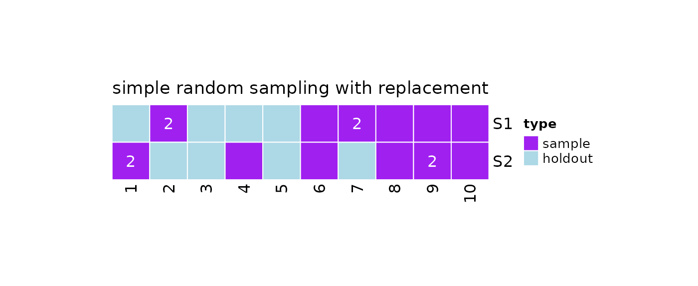
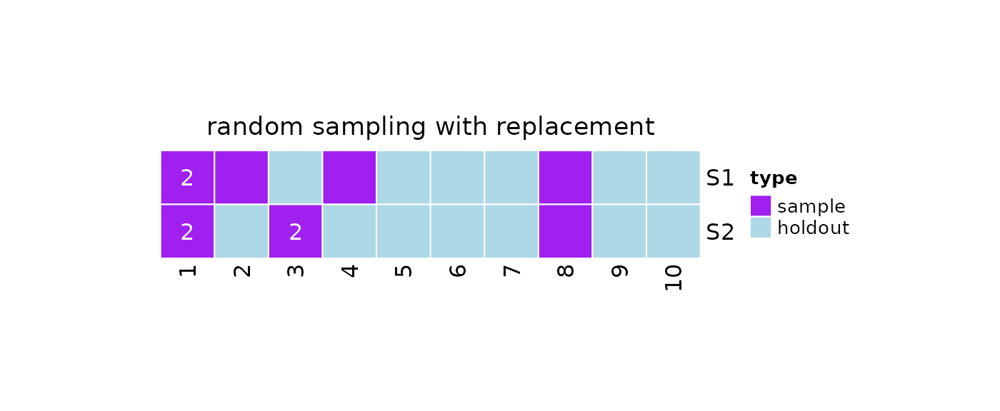
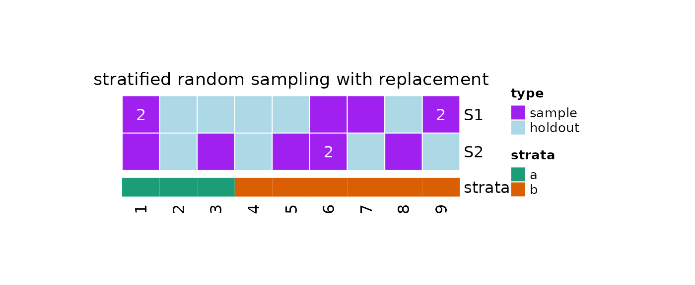
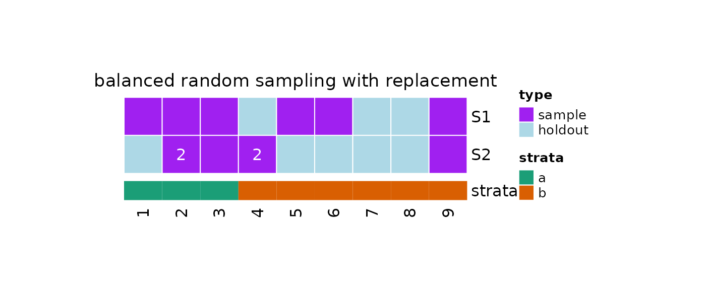
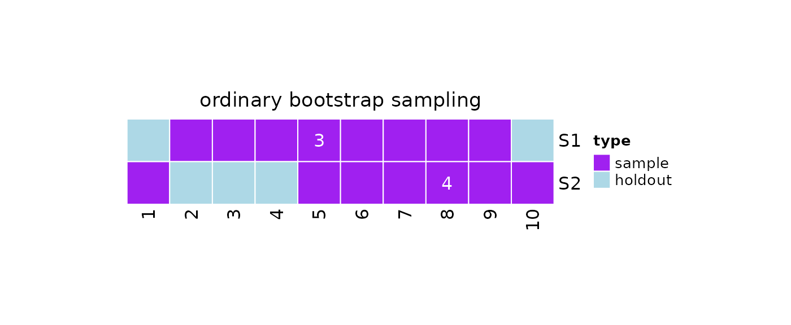

Introduction
Sampling with replacement implies that each element in the population may appear multiple times in one sample. There are different techniques of sampling with replacement, including:
- simple random sampling
- random sampling with unequal probabilities
- stratified sampling
- balanced sampling (a special case of stratified sampling)
In this article, we show how to draw repeated samples with
replacement from a population by using the functions
implemented in resampling.
For further information on the sampling techniques, see Sampling with replacement.
Setup
Loading
Firstly, we need to load resampling and other needed R
packages:
#resampling
library(resampling)
#Packages for visualisation
require(ComplexHeatmap, quietly = TRUE)
require(grid, quietly = TRUE)
require(RColorBrewer, quietly = TRUE)Seed
Then, we set a seed for the random number generation (RNG). In fact,
different R sessions have different seeds created from current time and
process ID by default, and consequently different simulation results. By
fixing a seed we ensure we will be able to reproduce the results of this
vignette. We can specify a seed by calling ?set.seed.
#Set a seed for RNG
set.seed(
#A seed
seed = 5381L, #a randomly chosen integer value
#The kind of RNG to use
kind = "Mersenne-Twister", #we make explicit the current R default value
#The kind of Normal generation
normal.kind = "Inversion" #we make explicit the current R default value
)Resampling With Replacement
The available methods for taking repeated samples with replacement
can be listed through the ?listAvailableSamplingMethods
function call, setting the input argument to 'rswr'.
?listAvailableSamplingMethods returns a table with two
columns:
-
id: the id of the sampling method, to be used in the function calls -
name: the name of the sampling method
#list sampling methods
sampling.methods = listAvailableSamplingMethods(x = 'rswr')
#print in table
knitr::kable(x = sampling.methods)| id | name |
|---|---|
| rswr | random sampling with replacement |
| srswr | simple random sampling with replacement |
| stratified_rswr | stratified random sampling with replacement |
| balanced_rswr | balanced random sampling with replacement |
| bootstrap | ordinary bootstrap sampling |
The name of the resampling functions can be retrieved by calling
?listResamplingFunctionNames.
#list resampling function names
resampling.function.names = listResamplingFunctionNames(x = 'rswr')
#print in table
knitr::kable(x = resampling.function.names)| id | name |
|---|---|
| rswr | repeatedSampleWithReplacement |
| srswr | repeatedSimpleRandomSampleWithReplacement |
| stratified_rswr | repeatedStratifiedSampleWithReplacement |
| balanced_rswr | repeatedBalancedSampleWithReplacement |
| bootstrap | repeatedBootstrapSample |
Each function is documented. To learn more about a specific method it
is possible to use the ? operator. For example, let’s check
the function
?repeatedSimpleRandomSampleWithReplacement.
#See documentation
?repeatedSimpleRandomSampleWithReplacementFrom the documentation, we can see that the function accepts 3 arguments in input:
-
k: the number of repeated samples to generate -
N: the population size -
n: the sample size
Simple Random Sampling
In resampling via simple random sampling (SRS), simple random samples with replacement are repeatedly taken from the population.
The function implementing this sampling scheme is
?repeatedSimpleRandomSampleWithReplacement, which accepts 3
arguments:
-
k: the number of repeated samples to generate -
N: the population size -
n: the sample size
#Simple random sampling with replacement
repeatedSimpleRandomSampleWithReplacement(
k = 2,
N = 10,
n = 8
)
#> [[1]]
#> [1] 1 9 10 3 4 1 9 8
#>
#> [[2]]
#> [1] 1 7 6 5 2 3 5 4Instead of using
?repeatedSimpleRandomSampleWithReplacement, we can take
repeated samples by using the ?resample function.
#Simple random sampling with replacement
obj = resample(
x = 10,
n = 8,
k = 2,
method = 'srswr'
)
#Print
print(obj)
#>
#> 2 samples taken from a population of 10 elements by using simple random
#> sampling with replacement.
#>
#> sampleNumber sample sampleSize holdoutSize
#> 1 1 2, 2, 8, 9, ... 8 4
#> 2 2 9, 6, 1, 4, ... 8 4
#Samples
getSamples(obj)
#> [[1]]
#> [1] 2 2 8 9 6 7 7 10
#>
#> [[2]]
#> [1] 9 6 1 4 9 8 10 1
#Holdout Data
getHoldOutSamples(obj)
#> [[1]]
#> [1] 1 3 4 5
#>
#> [[2]]
#> [1] 2 3 5 7
#Plot
plot(x = obj)
Random Sampling With Unequal Probability
We can use ?repeatedSampleWithReplacement to draw
repeated samples without replacement with unequal
probability. From the documentation, we can see that the
function accepts 4 arguments in input:
-
k: the number of repeated samples to generate -
N: the population size -
n: the sample size -
prob: an optional vector of probabilities for obtaining the population elements
For example, let’s assume our population of interest has 10 elements, and that the first 3 elements have an higher chance of being selected.
#Random sampling with replacement
repeatedSampleWithReplacement(
k = 2,
N = 10,
n = 5,
prob = c(rep(3,3), rep(1,7))
)
#> [[1]]
#> [1] 4 8 1 4 1
#>
#> [[2]]
#> [1] 1 1 6 2 5We can take repeated samples by using the ?resample
function and setting method = 'rswr'.
#Random sampling with replacement
obj = resample(
x = 10,
n = 5,
k = 2,
method = 'rswr',
prob = c(rep(3,3),rep(1,7))
)
#Print
print(obj)
#>
#> 2 samples taken from a population of 10 elements by using random
#> sampling with replacement.
#>
#> sampleNumber sample sampleSize holdoutSize
#> 1 1 2, 1, 8, 1, ... 5 6
#> 2 2 1, 1, 3, 8, ... 5 7
#Samples
getSamples(obj)
#> [[1]]
#> [1] 2 1 8 1 4
#>
#> [[2]]
#> [1] 1 1 3 8 3
#Holdout Data
getHoldOutSamples(obj)
#> [[1]]
#> [1] 3 5 6 7 9 10
#>
#> [[2]]
#> [1] 2 4 5 6 7 9 10
#Plot
plot(x = obj)
Stratified Random Sampling
Repeated stratified samples with replacement can be
taken by using ?repeatedStratifiedSampleWithReplacement
which accept a strata argument in input.
#Define strata
strata = c(rep("a", 3),rep("b", 6))
#Stratified sampling without replacement
repeatedStratifiedSampleWithReplacement(
k = 2,
strata = strata,
n = 6
)
#> [[1]]
#> [1] 5 7 1 2 6 6
#>
#> [[2]]
#> [1] 8 5 1 5 5 1We can take repeated samples by using the ?resample
function and setting method = 'stratified_rswr'.
#Stratified sampling with replacement
obj = resample(
x = strata,
n = 6,
k = 2,
method = 'stratified_rswr'
)
#Print
print(obj)
#>
#> 2 samples taken from a population of 9 elements by using stratified
#> random sampling with replacement.
#>
#> sampleNumber sample sampleSize holdoutSize
#> 1 1 1, 6, 9, 1, ... 6 5
#> 2 2 6, 6, 1, 8, ... 6 4
#Samples
getSamples(obj)
#> [[1]]
#> [1] 1 6 9 1 7 9
#>
#> [[2]]
#> [1] 6 6 1 8 5 3
#Holdout Data
getHoldOutSamples(obj)
#> [[1]]
#> [1] 2 3 4 5 8
#>
#> [[2]]
#> [1] 2 4 7 9
#Plot
plot(x = obj, strata = strata)
Balanced Random Sampling
Balanced sampling is a special case of stratified sampling used to ensure that subgroups of the population are equally represented in the taken sample.
Repeated balanced samples with replacement can be taken by using
?repeatedBalancedSampleWithReplacement:
#Define strata
strata = c(rep("a", 3),rep("b", 6))
#Check ratio
table(strata)/length(strata)
#> strata
#> a b
#> 0.3333333 0.6666667
#Balanced sampling with replacement
s = repeatedBalancedSampleWithReplacement(
k = 2,
strata = strata,
n = 6
)
#Check ratio in the samples
table(strata[s[[1]]])/length(strata[s[[1]]])
#>
#> a b
#> 0.5 0.5
table(strata[s[[2]]])/length(strata[s[[2]]])
#>
#> a b
#> 0.5 0.5We can take repeated samples by using the ?resample
function and setting method = 'balanced_rswr'.
#Balanced sampling with replacement
obj = resample(
x = strata,
n = 6,
k = 2,
method = 'balanced_rswr'
)
#Print
print(obj)
#>
#> 2 samples taken from a population of 9 elements by using balanced
#> random sampling with replacement.
#>
#> sampleNumber sample sampleSize holdoutSize
#> 1 1 9, 1, 3, 5, ... 6 3
#> 2 2 2, 9, 2, 4, ... 6 5
#Samples
getSamples(obj)
#> [[1]]
#> [1] 9 1 3 5 6 2
#>
#> [[2]]
#> [1] 2 9 2 4 4 3
#Holdout Data
getHoldOutSamples(obj)
#> [[1]]
#> [1] 4 7 8
#>
#> [[2]]
#> [1] 1 5 6 7 8
#Plot
plot(x = obj, strata = strata)
Bootstrap Sampling
We can take repeated bootstrap samples by using
?repeatedBootstrapSample:
#Bootstrap sampling
repeatedBootstrapSample(
k = 2,
N = 10
)
#> [[1]]
#> [1] 9 7 10 9 2 4 10 7 10 3
#>
#> [[2]]
#> [1] 5 5 7 5 5 8 6 2 3 3We can also use the ?resample function by setting
method = 'bootstrap'.
#Bootstrap sampling
obj = resample(
x = 10,
k = 2,
method = 'bootstrap'
)
#Print
print(obj)
#>
#> 2 samples taken from a population of 10 elements by using ordinary
#> bootstrap sampling.
#>
#> sampleNumber sample sampleSize holdoutSize
#> 1 1 9, 5, 4, 5, ... 10 2
#> 2 2 5, 8, 7, 1, ... 10 3
#Samples
getSamples(obj)
#> [[1]]
#> [1] 9 5 4 5 7 3 5 2 6 8
#>
#> [[2]]
#> [1] 5 8 7 1 9 10 8 8 8 6
#Holdout Data
getHoldOutSamples(obj)
#> [[1]]
#> [1] 1 10
#>
#> [[2]]
#> [1] 2 3 4
#Plot
plot(x = obj)